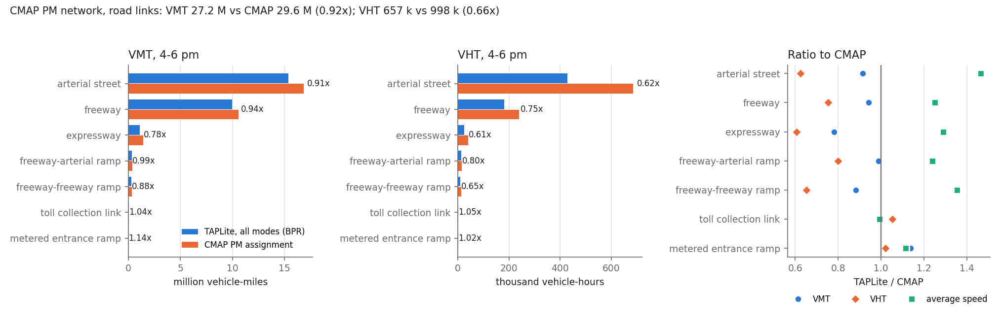

CMAP's own PM assignment on every road link except centroid connectors: 27,192 features, with two directions merged into one line. Click a link for both directions. Switch the measure to see where the network is loaded and where CMAP's model is congested.
| Category | Value | Category | Value |
|---|---|---|---|
| Source model | CMAP trip-based, ON TO 2050 | Time period | PM (Emme period 7, 4–6 pm) |
| Scenario | c25q4, 100 = 2019 base | Demand classes | 8 |
| Emme links (directed) | 55,005 | PM vehicle trips | 3,527,730 |
| Directed GMNS links | 55,005 (none dropped) | — written after the 0.01 floor | 3,481,077 (98.7%) |
| Nodes | 20,190 | VDF codes | 8 (arterial … metered ramp) |
| Zones | 3,649 | Capacity basis | veh/h/lane, LOS E (@emcap) |
| — internal / external | 3,632 / 17 | VDF | CMAP fd1–fd8 recorded; TAPLite form chosen in replay |
| Centroid connectors | 7,264 | CMAP results kept | ref_volume = DATA1, ref_time = TIMAU |
| Connectivity | one strongly connected network | Output columns | 30 in link.csv, each with source and unit |
The conversion follows CMAP's own code, not only its documentation. Seven files from CMAP's public
model repository (Ftime_capacity.py, TOD_network_prep.py, vdf_tod.in,
ttables.mac, tod_factors.p7, tod_flags.in,
SOLA_assignment.py) settle what the appendix leaves open.
Each test compares a converted value against a value CMAP itself stored or computed. No assignment is involved.
| Test | Ours | CMAP's stored value | Agreement |
|---|---|---|---|
PM volume DATA1 vs extra attribute @vadt | 55,005 links | max difference 0.0005 veh | exact |
Congested time TIMAU vs timau | 55,005 links | max difference 0.000001 min | exact |
Lanes vs Emme transaction file network_p7.txt | 55,005 / 55,005 | same node and link counts | exact |
@ftime recomputed from binned @speed | 100% of VDF 1–6, 8 | Ftime_capacity.py rule | exact |
VDF 5, 8 at DATA1 vs TIMAU | median −0.04% | vdf_tod.in fd5, fd8 | exact |
| PM SOV demand mf417 + mf427 + mf437 | 2,351,437 | trip_roster PM2 mode 1 = 2,351,437 | exact |
| Our OD, trips between zones | 3,035,518 | trips leaving centroids in CMAP's network = 3,065,674 | 0.990 |
The last test closes the loop between demand and network. The 1% gap is the park-and-ride first legs, which CMAP builds inside its run and does not export. The same test settles one fact the guide leaves implicit: CMAP's stored link volumes are vehicles, not vehicle equivalents. On a vehicle-equivalent basis the ratio would be 0.957.
The code also settled four points the appendix states differently or not at all:
@ftime rounds @speed up to a speed bin (freeway 70 → 65 mph; expressway at least 40);@toll is dollars per link;Read from the converted link.csv (ref_volume, ref_time,
vdf_fftt). Delay = congested minus free-flow vehicle-hours.
| VDF | Facility | Links | Lane-miles | VMT | VHT | Delay (veh-h) | Speed (mph) |
|---|---|---|---|---|---|---|---|
| 1 | Arterial street | 41,861 | 36,969 | 16,836,841 | 685,657 | 234,550 | 24.6 |
| 2 | Freeway | 1,998 | 5,512 | 10,565,352 | 239,959 | 59,891 | 44.0 |
| 3 | Freeway → arterial ramp | 1,992 | 586 | 364,490 | 15,912 | 3,800 | 22.9 |
| 4 | Expressway | 930 | 1,297 | 1,436,129 | 40,963 | 9,399 | 35.1 |
| 5 | Freeway → freeway ramp | 664 | 304 | 338,540 | 13,349 | 4,165 | 25.4 |
| 6 | Zone centroid connector | 7,264 | 5,052 | 3,893,909 | 194,696 | 0 | 20.0 |
| 7 | Toll collection link | 188 | 82 | 67,954 | 1,254 | 0 | 54.2 |
| 8 | Metered entrance ramp | 108 | 23 | 19,478 | 1,018 | 241 | 19.1 |
| PM, 4–6 pm | 55,005 | 49,824 | 33,522,694 | 1,192,807 | 312,046 | 28.1 |
Without connectors, the road network carries 29.6 M VMT at 29.7 mph. In CMAP's PM run, 3,615 road links are above 1.0 of their VDF capacity, and 2,947 run at more than three times their free-flow time. Switch the map to "Congested / free-flow time" to see where.
Built the way CMAP's ttables.mac builds its period-7 tables; factors from
tod_factors.p7, which equal the data guide's TOD7 column. One file per class, in vehicles per
2-hour period.
| Class | Source | PM vehicles | OD rows | Kept at > 0.01 |
|---|---|---|---|---|
sov | mf417 + mf427 + mf437 + 0.155 × mf8 (external autos) | 2,393,513 | 818,885 | 100.0% |
hov2 | mf447 | 513,112 | 342,932 | 100.0% |
hov3 | mf457 | 141,612 | 204,014 | 100.0% |
apv | 0.155 × mf10, airport zones only | 11,839 | 26,944 | 99.9% |
btrk | 0.176 × mf4 (B-plate) | 307,563 | 1,338,781 | 96.5% |
ltrk | 0.176 × mf5 | 51,627 | 718,863 | 71.9% |
mtrk | 0.176 × mf6; pce 2 | 48,066 | 664,820 | 70.9% |
htrk | 0.103 × (mf7 + mf9 external trucks); pce 3 | 60,398 | 659,707 | 87.6% |
| total | 3,527,730 | 4,774,946 | 98.7% |
Demand floor. The truck tables are dense: about 13 million positive cells each, most of them a small fraction of a trip. Cells at or below 0.01 vehicles are not written and are not rescaled. Autos keep over 99.9%. Light and medium trucks keep about 71%, and heavy trucks 88%.
First run, preliminary (November 6, 2026). TAPLite assigned the converted PM network and demand
with one BPR function on every road link. Inputs, the TAPLite build, run scripts and the evaluation:
city-tensor/cmap_ta_bpr_allmodes.
| Setting | Value |
|---|---|
| Network, demand | this conversion: 55,005 links, 3,649 zones, 3,481,077 PM vehicles (all written cells) |
| Classes | 5: car = sov + hov2 + hov3 + apv; btrk, ltrk; mtrk (pce 2); htrk (pce 3) |
| Volume-delay | BPR, α = 0.15, β = 4, on @emcap × lanes; connectors and toll links at @ftime |
| Tolls, bus preload | not included |
| Run | 10 iterations, relative gap 0.18 %, 7 min 43 s on 2 cores, 5.3 GB memory |
The four car modes are merged into one class because eight classes did not fit in 8 GB (about 8.5 GB needed). Without tolls the four car modes see the same costs, so link volumes are unchanged; only the split by car mode is lost.
| Facility | VMT (M) TAPLite / CMAP | ratio | VHT (k) TAPLite / CMAP | ratio | Speed (mph) TAPLite / CMAP | Volume R² |
|---|---|---|---|---|---|---|
| Arterial street | 15.38 / 16.84 | 0.91 | 427.8 / 685.7 | 0.62 | 36.0 / 24.6 | 0.86 |
| Freeway | 9.96 / 10.57 | 0.94 | 181.0 / 240.0 | 0.75 | 55.0 / 44.0 | 0.92 |
| Expressway | 1.12 / 1.44 | 0.78 | 24.8 / 41.0 | 0.61 | 45.2 / 35.1 | 0.72 |
| Freeway → arterial ramp | 0.36 / 0.36 | 0.99 | 12.7 / 15.9 | 0.80 | 28.4 / 22.9 | 0.62 |
| Freeway → freeway ramp | 0.30 / 0.34 | 0.88 | 8.7 / 13.3 | 0.65 | 34.3 / 25.4 | 0.74 |
| Toll collection link | 0.07 / 0.07 | 1.04 | 1.3 / 1.3 | 1.05 | 53.8 / 54.2 | 0.90 |
| Metered entrance ramp | 0.02 / 0.02 | 1.14 | 1.0 / 1.0 | 1.02 | 21.3 / 19.1 | 0.61 |
| Road links | 27.22 / 29.63 | 0.92 | 657.4 / 998.1 | 0.66 | 41.4 / 29.7 | 0.93 |

Reading. Route choice is right: volumes follow CMAP on freeways and arterials (VMT 0.94 and 0.91,
R² 0.92 and 0.86). Delay is not: TAPLite's network delay is 34 thousand vehicle-hours against CMAP's 312
thousand, so speeds are 25–46 % higher. Where CMAP has no delay the link times agree; where CMAP is congested,
BPR (0.15, 4) on @emcap adds much less. CMAP's functions are steeper (0.75 × capacity, β = 8 on
freeways) and add signal delay on arterials (arterial median time ratio 0.77). Expressways carry 0.78 of CMAP's
traffic because the run has no tolls, so the parallel tollways attract more.
el2). These are not
exported, so the runs so far are without them.All links including connectors, 4–6 pm. “Ours” is the first TAPLite run above (BPR 0.15, 4; no tolls). Delay is congested minus free-flow vehicle-hours.
| Measure | Ours | CMAP, PM | Ratio |
|---|---|---|---|
| Demand (vehicle trips between zones) | 3,035,518 | 3,065,674 | 0.990 |
| Link volume (vehicles) | 54,301,914 | 56,908,112 | 0.954 |
| VMT (vehicle-miles) | 31,016,448 | 33,522,694 | 0.925 |
| VHT (vehicle-hours) | 847,447 | 1,192,807 | 0.710 |
| Delay (vehicle-hours) | 33,952 | 312,046 | 0.109 |
| Average speed (mph) | 36.6 | 28.1 | 1.302 |
| Link volume R², road links | 0.93 |
Partly possible already, which is where Chicago differs from SCAG. The dataset holds 2023 INRIX TMC speeds, hourly, on 18 corridor-directions, with fitted QVDF parameters per TMC. These are mapped to the OSM City-of-Chicago network today; the next step maps the same TMCs to CMAP links. Counts are still missing: every corridor demand is derived from speed. IDOT AADT is the first independent volume check to add.
CMAP_network_conversion_reference.pdf;
printable version: CMAP_progress_report.pdf.
Map data: cmap_report_data.js must sit beside this file. Basemap tiles (Esri) and the mapping library load from the internet.